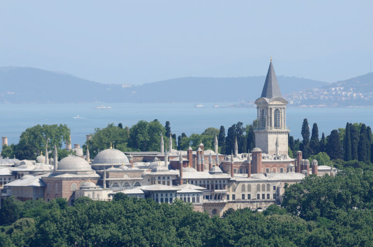
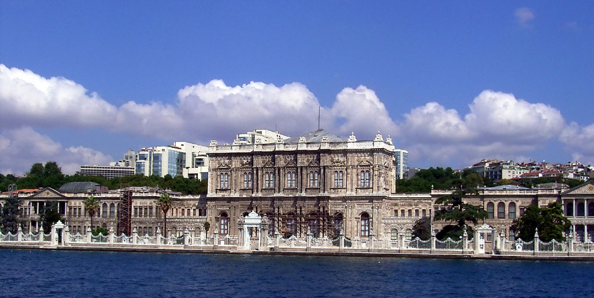
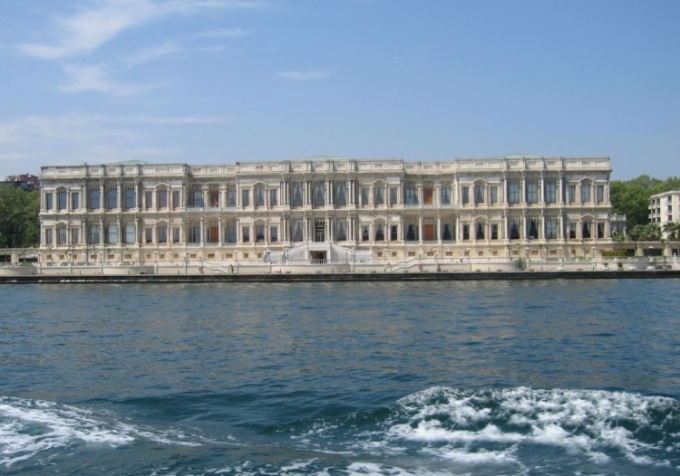
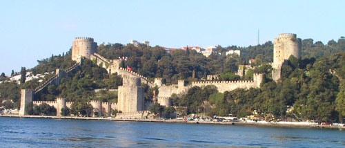
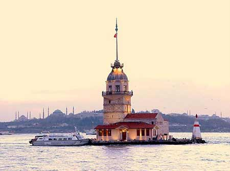
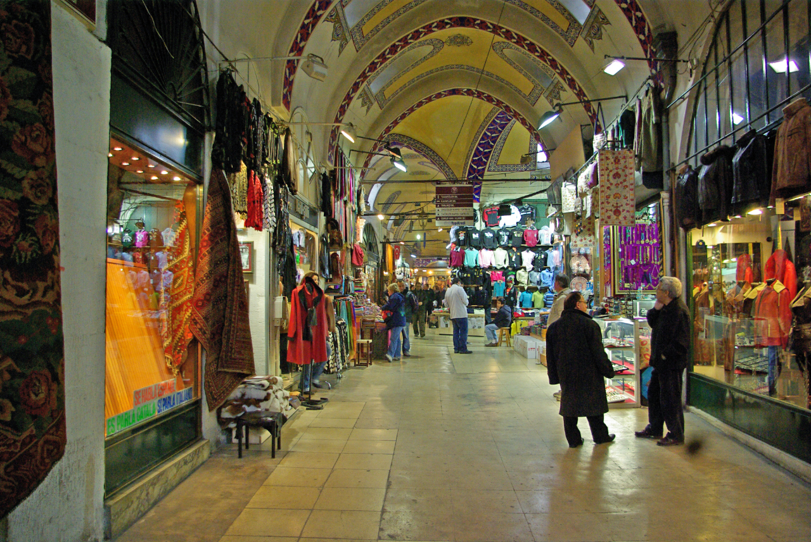
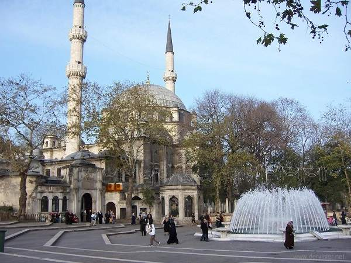
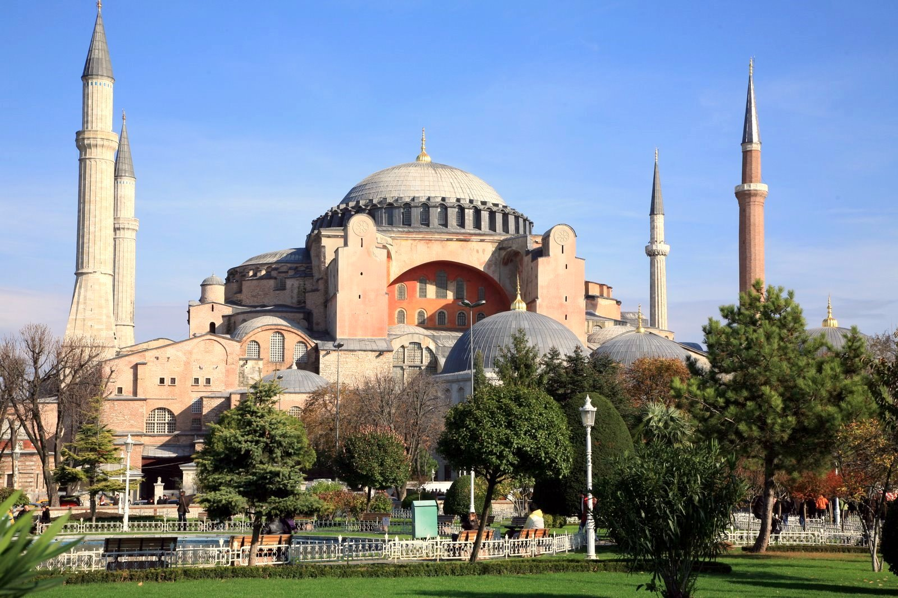

İstanbul surları, camileri, sarayları, müzeleriyle adeta yaşayan bir tarihtir.
Bu tarihe tanık olabilmek, nostaljiyi hissedebilmek için çok uzaklara gitmeye gerek yok.
Çünkü İstanbul her köşesinde tarihi olaylardan kesit taşır.
Topkapı Sarayı
İhtişamıyla ve mimarisiyle büyüleyen Topkapı Sarayı İstanbul'da görülmeden geçilmemesi gereken tarihi mekanların başında yer alır. 1478 yılında Fatih Sultan Mehmet tarafından yaptırılan saray, 400 yıl boyunca padişahların yaşadığı ve devleti idare ettikleri ana merkez görevini üstlenmiş, tarihe tanıklık etmiştir.
Abdülmecit döneminde ziyarete açılan Topkapı Sarayı günümüzde de ziyaretçilerini ağırlamakta, gizemi ve Osmanlı mimarisine ait taşıdığı izlerle turistlerin ilgi odağı olmaktadır

Topkapı Sarayı
Dolmabahçe Sarayı
Dolmabahçe Sarayı
Dolmabahçe Sarayı, imparatorluk döneminde Osmanlı Kaptan-ı Derya'sının gemileri demirlediği bir alan olarak kullanılmış daha sonra ise has bahçeye dönüştürülmüştür.
Cumhuriyet döneminde ise Atatürk'ün İstanbul ziyaretlerinde kaldığı bir mekan olmasıyla ve hayata gözlerini burada yumması nedeniyle büyük önem taşımaktadır.
Bu kadar tarihi dokuyu bir arada bulunduran saray, yerli yabancı turistlerin mutlaka görmesi gereken yerlerdendir.

Dolmabahçe Sarayı
Çırağan Sarayı
Sultan Abdülaziz tarafından yaptırılan Çırağan Sarayı bir dönem konumu itibariyle "Beşiktaş Sarayı" olarak da anılmaktaydı.
Büyük bir ihtişama ve görkeme sahip olan saray, bugün düğün, balo, parti gibi organizasyonların düzenlendiği bir mekan halini almıştır.
Böyle bir mimariyi görmek, geçmişten bir hava solumak isteyenlerin çeşitli organizasyonlar için uğrak yeri olmuş,bir çok yerli yabancı turisti ağırlamaktadır.

Çırağan Sarayı
Rumeli Hisarı
Osmanlı döneminde, İstanbul Fethi sırasında Anadolu Hisarı'ndan halat çekmek için yapılmış olan etrafı kalelerle kaplı Rumeli Hisarı günümüzün vazgeçilmez mekanları arasında yer alır.
Hem turistlerin hem İstanbul'da yaşayanların kesinlikle bir hafta sonu kahvaltısı için aynı zamanda da tarihi yapıyı görmek için gitmesi gereken mekanlardandır.

Rumeli Hisarı
Kız Kulesi
İstanbul Boğazı'nda Salacak açıklarında yer alan küçük bir adacık üzerinde konumlanmış bir kuledir.
Hakkında neden yapıldığına dair çeşitli rivayetler ve efsaneler bulunan Kız Kulesi bu gizemi anlayabilmek adına bile görülesi mekanlardandır.
Günümüzde eşinizle, dostunuzla gidebileceğiniz, romantik bir akşam yemeği ya da rutin dışında bir öğle molası için gidilebilecek ve yapısıyla mutlaka görülmesi gereken tarihi bir mekandır.

Kız Kulesi
Kapalı Çarşı
Kapalıçarşı
Kapalıçarşı İstanbul'un merkezinde yer alan, tarihi dokusu ve alışveriş yapılacak bir çok mekanı içerisinde barındırması nedeniyle turistlerin yoğun ilgisiyle karşılaşır.
Gün içerisinde yarım milyon insanın uğradığı bile bilinmektedir.
Özellikle yabancı turistlerin uğramadan ülkelerine dönmedikleri bir yer olan Kapalıçarşı, her gün bütün ihtiyaçları karşılayacak dükkanlarıyla gözde mekanlardan biridir.
Adeta bir şehri andıran Kapalıçarşı Fatih Sultan Mehmet tarafından tarafından insanların yaptıklarını sergileyip satmaları için yaptırılmıştır.

Kapalı Çarşı
Eyüp Sultan Camii
Günümüzde kutsal bir ibadet yeri olarak atfedilen Eyüp Sultan Camii Haliç kıyısında, Eyüp semtinde yer almaktadır.
Diğer illerden ya da yurtdışından gelen turistlerin görmeden geçmedikleri tarihi bir camiidir.
İstanbul'un kutsal cuma gününde, kalabalığın camiye yöneldiği ve ibadet ettiği görülür. Görülmesi gereken, kutsal sayılan yerlerdendir.

Eyüp Sultan Camii
Ayasofya
Sınırsızlığı ve görkemiyle yerli yabancı çoğu turisti şaşırtan ve görmek için mutlaka vakit ayrılması gereken mekanlardan biri de Ayasofya Müzesi'dir.
Bizans İmparatoru 1. Jüstinyen tarafından yaptırılmış daha sonra ise Fatih Sultan Mehmet tarafından camiye dönüştürülmüş olan Ayasofya tarihi hissetmek, şahit olmak isteyen bir çok turisti ağırlamaktadır.

Ayasofya
Sultan Ahmet Meydanı
Sultan Ahmet meydanının yanında Yerebatan Sarnıcı ve Binbirdirek Sarnıcı bulunmaktadır. Binbirdirek Sarnıcında 224 sütun direk bulunur ve 4. yüzyılda yapıldığı tahmin edilmektedir. Yerebatan Sarnıcı ise 336 sütundan oluşur ve MS (527-565) de yapılmıstır.
Osmanlı döneminde ikişer kez restore edilen bu sarnıçlar, şuan kültürel faaliyetler için halkın kullanımına açılmıştır.
Meydanın orta yerinde Kayzer Wilhelm'in ziyaret hatırası olarak yapılmış olan Alman Çeşmesi bulunmaktadır.
Meydanın batısında ise İstanbul Adliyesi yer almaktadır.
Meydan günümüzde İstanbul'un en önemli turistik merkezidir.
Sultan Ahmet Meydanı
Yerebatan Sarnıcı
Suların içinde yükselen sütunlarıyla, yaşandığı rivayet edilen ilginç efsaneleriyle Yerebatan Sarnıcı en çok merak edilen, görmek için can atılan mekanlar arasında.
Bizans İmparatoru tarafından sarayın su ihtiyacını karşılamak için kullanılan Yerebatan Sarnıcı, Fatih Sultan Mehmet döneminde de bir süre aynı şekilde devam etmiştir.
Sütunların üzerinde bulunan şekillerin gözyaşlarını andırması, Büyük Basilika yapılırken kaybedilen bir çok kölenin dramını temsil etmesi açısından önem taşıdığı ise efsane ve rivayetler arasındadır.
Bu yüzden yapısıyla da bir çok turistin ilgi odağı olmakta, merakını cezbetmektedir.